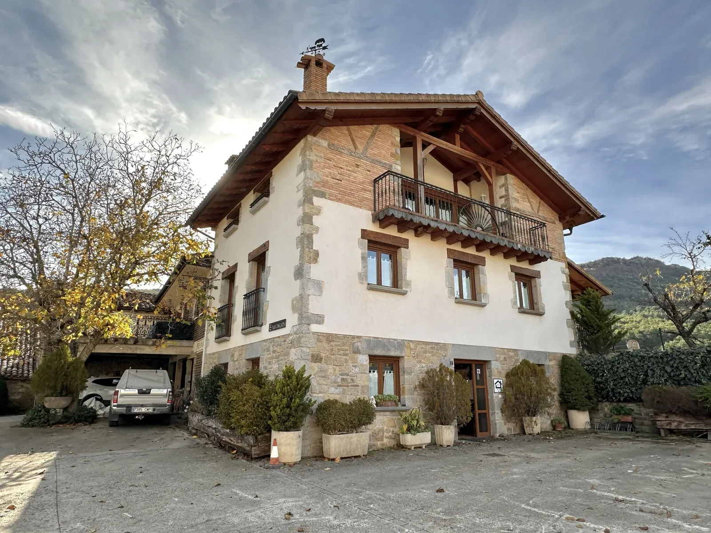

Proyecto · Rehabilitación rural
Casa Rural Enarakabi
Urrizelki · Navarra
Enarakabi
Una casa con historia.
Enarakabi forma parte de nuestro recorrido por la arquitectura rural. La rehabilitación de construcciones existentes exige atender a sus características y al lugar en el que se encuentran.
Esta ficha se puede ampliar con la memoria real del proyecto, el alcance de la intervención y más fotografías.
← Volver a proyectos
La casa por dentro y por fuera
Galería de Enarakabi
Una selección de fotografías de la casa y su entorno.